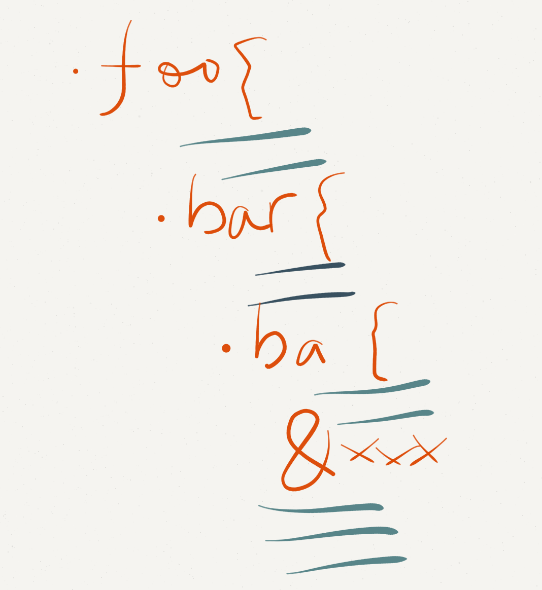

我是一丝
阿里妈妈 前端
.foo {
transition: width .3s;
-webkit-transition: width .3s;
-moz-transition: width .3s;
-ms-transition: width .3s;
-o-transition: width .3s;
}
.foo {
transition: width .3s; /*标准属性应该放到最后*/
-webkit-transition: width .3s;
-moz-transition: width .3s;
-ms-transition: width .3s; /*IE 不用前缀*/
-o-transition: width .3s;
}
CSS 预处理器兴起
始于颠覆→.sass
归于平凡→.scss
CSS 预处理器兴起
2009 → Alexis Sellier
2012.5 → 作者不干了
CSS 预处理器兴起

//Less
@linkcolor: #61c;
//Scss
$linkcolor: #61c;
//Stylus
$linkcolor = #61c;
//Less
.transition(value) {
-webkit-transition: value;
-moz-transition: value;
-o-transition: value;
transition: value;
}
.foo {
.transition(width .3s);
}
//Scss
@mixin transition($value) {
-webkit-transition: $value;
-moz-transition: $value;
-o-transition: $value;
transition: $value;
}
.foo {
@include transition(width .3s);
}
Stylus
//Stylus
transition(value) {
-webkit-transition: value;
-moz-transition: value;
-o-transition: value;
transition: value;
}
.foo {
transition(width .3s);
}
三者语法相同
a {
color: #333;
&:hover{
text-decoration: underline;
}
}
//输出：
a {
color: #333;
}
a:hover{
text-decoration: underline;
}

.foo {
transition: width .3s;
}
.foo {
-webkit-transition: width .3s;
-moz-transition: width .3s;
-o-transition: width .3s;
transition: width .3s;
}
/* 变量 */
:root {
--fontSize: 14px;
--mainColor: #333;
--highlightColor: hwb(190, 35%, 20%);
}
/* 自定义 media queries */
@custom-media --viewport-medium (min-width: 760px) and (max-width: 990px);
/* 变量引用 以及使用 calc() 运算*/
body {
color: var(--mainColor);
font-size: var(--fontSize);
line-height: calc(var(--fontSize) * 1.5);
padding: calc((var(--fontSize) / 2) + 1px);
}
/* 颜色处理函数 */
a {
color: color(var(--highlightColor) blackness(+20%));
background: color(red a(80%))
}
/* 使用自定义 media queries */
@media (--viewport-medium) {
.foo {
display: flex;
font-size: calc(var(--fontSize) * 2 + 6px);
}
}
/* 变量 */
/* 自定义 media queries */
/* 变量引用 以及使用 calc() 运算*/
body {
color: #333;
font-size: 14px;
line-height: 21px;
padding: 8px;
}
/* 颜色处理函数 */
a {
color: rgb(89, 142, 153);
background: rgba(255, 0, 0, 0.8)
}
/* 使用自定义 media queries */
@media (min-width: 760px) and (max-width: 990px) {
.foo {
display: -webkit-box;
display: -webkit-flex;
display: -ms-flexbox;
display: flex;
font-size: 34px;
}
}

.foo {
position: absolute;
display: block;
float: left;
display: block;
}

.foo {
display: -webkit-box;
}

（稍后发布）

人性化的闭合浮动

module.exports = function(grunt) {
// 项目配置
grunt.initConfig({
pkg: grunt.file.readJSON('package.json'),
postcss: {
options: {
processors: [
require('cssgrace').postcss
]
},
dist: {
src: ['src/*.css'],
dest: 'build/grunt.css'
}
}
});
// 加载任务插件
grunt.loadNpmTasks('grunt-contrib-uglify');
grunt.loadNpmTasks('grunt-postcss');
// 默认任务
grunt.registerTask('default', ['postcss']);
}
var gulp = require('gulp');
var rename = require('gulp-rename');
var postcss = require('gulp-postcss');
var cssgrace = require('cssgrace');
gulp.task('default', function () {
var processors = [
cssgrace
];
return gulp.src('src/*.css')
.pipe(postcss(processors))
.pipe(rename('gulp.css'))
.pipe(gulp.dest('build'))
});
gulp.watch('src/*.css', ['default']);

《CSS 后处理器》